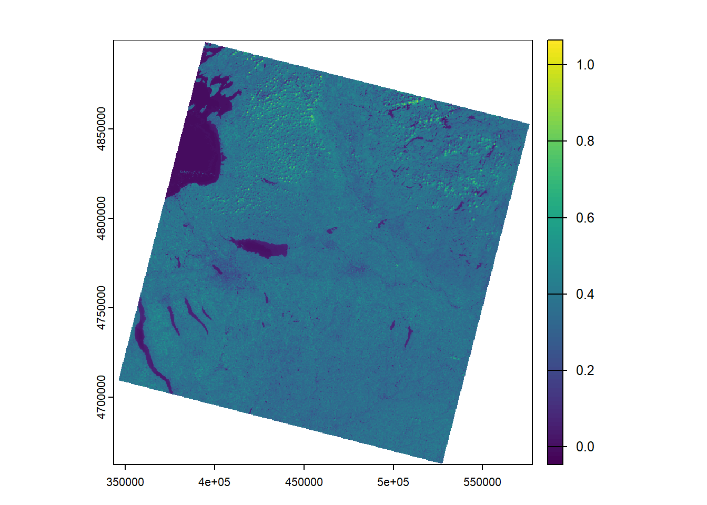
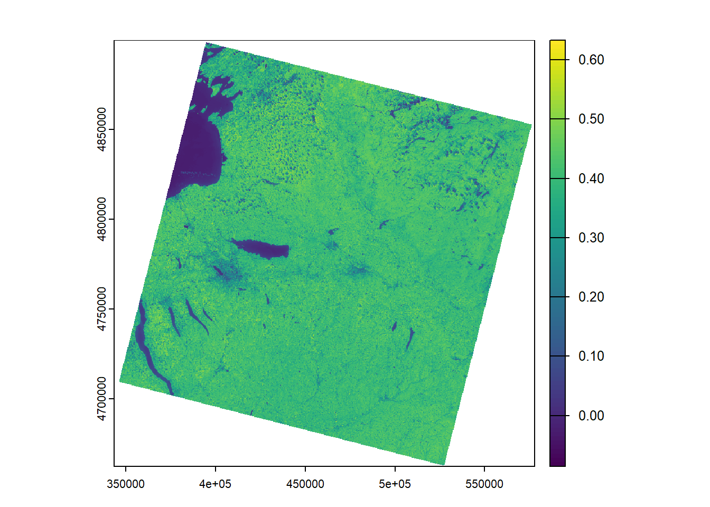
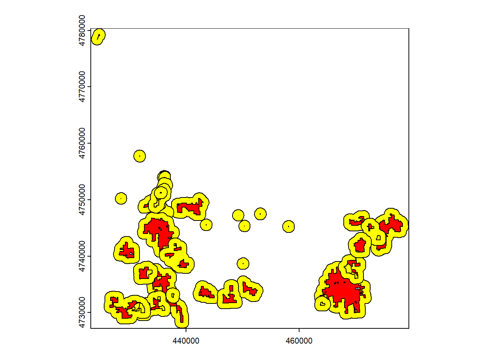

library(terra)
library(tidyterra)
library(FedData)Spatial Analysis
Spatial Analysis
Today we’ll use the terra package to explore Landsat remote sensing data and perform spatial analysis using raster and vector data. We’ll be working with Landsat 9 Collection 2 Level 2 science data products. The data have been processed to convert the radiance measured by the satellite sensor to surface reflectance using some sophisticated atmospheric modeling. Start a new script for this exercise, and load the terra package, along with any others that you think you might use.
Preparing Landsat Imagery
To begin, let’s list all of the files in the landsat directory within our class data folder. We’ll create a vector to store each of the file names, and use the full.names = T argument to make sure we have the full file path. Note that we’re not copying the data to our own folder because the files are large.
f <- list.files("Z:/GEOG331_F25/data/landsat", full.names = T)
# student filepaths may be as follows
#f <- list.files("Z:/data/landsat", full.names = T)
f [1] "Z:/GEOG331_F25/data/landsat/LC09_L2SP_015030_20250804_20250805_02_T1_QA_PIXEL.TIF"
[2] "Z:/GEOG331_F25/data/landsat/LC09_L2SP_015030_20250804_20250805_02_T1_QA_RADSAT.TIF"
[3] "Z:/GEOG331_F25/data/landsat/LC09_L2SP_015030_20250804_20250805_02_T1_SR_B1.TIF"
[4] "Z:/GEOG331_F25/data/landsat/LC09_L2SP_015030_20250804_20250805_02_T1_SR_B2.TIF"
[5] "Z:/GEOG331_F25/data/landsat/LC09_L2SP_015030_20250804_20250805_02_T1_SR_B3.TIF"
[6] "Z:/GEOG331_F25/data/landsat/LC09_L2SP_015030_20250804_20250805_02_T1_SR_B4.TIF"
[7] "Z:/GEOG331_F25/data/landsat/LC09_L2SP_015030_20250804_20250805_02_T1_SR_B5.TIF"
[8] "Z:/GEOG331_F25/data/landsat/LC09_L2SP_015030_20250804_20250805_02_T1_SR_B6.TIF"
[9] "Z:/GEOG331_F25/data/landsat/LC09_L2SP_015030_20250804_20250805_02_T1_SR_B7.TIF"
[10] "Z:/GEOG331_F25/data/landsat/LC09_L2SP_015030_20250804_20250805_02_T1_SR_QA_AEROSOL.TIF"
[11] "Z:/GEOG331_F25/data/landsat/LC09_L2SP_015030_20250804_20250805_02_T1_ST_ATRAN.TIF"
[12] "Z:/GEOG331_F25/data/landsat/LC09_L2SP_015030_20250804_20250805_02_T1_ST_B10.TIF"
[13] "Z:/GEOG331_F25/data/landsat/LC09_L2SP_015030_20250804_20250805_02_T1_ST_CDIST.TIF"
[14] "Z:/GEOG331_F25/data/landsat/LC09_L2SP_015030_20250804_20250805_02_T1_ST_DRAD.TIF"
[15] "Z:/GEOG331_F25/data/landsat/LC09_L2SP_015030_20250804_20250805_02_T1_ST_EMIS.TIF"
[16] "Z:/GEOG331_F25/data/landsat/LC09_L2SP_015030_20250804_20250805_02_T1_ST_EMSD.TIF"
[17] "Z:/GEOG331_F25/data/landsat/LC09_L2SP_015030_20250804_20250805_02_T1_ST_QA.TIF"
[18] "Z:/GEOG331_F25/data/landsat/LC09_L2SP_015030_20250804_20250805_02_T1_ST_TRAD.TIF"
[19] "Z:/GEOG331_F25/data/landsat/LC09_L2SP_015030_20250804_20250805_02_T1_ST_URAD.TIF" You can sere there is a lot here, 19 files total. Any guesses as to what these might be based on the file names? Let’s take a look at the data we’re interested in, we’ll read in Surface Reflectance Bands 1-7.
# read in files 3-10 as a single multi-band raster
lc <- rast(f[3:10])
#look at Band 5 to get information about the data
lc[[5]]class : SpatRaster
dimensions : 7911, 7811, 1 (nrow, ncol, nlyr)
resolution : 30, 30 (x, y)
extent : 343485, 577815, 4662285, 4899615 (xmin, xmax, ymin, ymax)
coord. ref. : WGS 84 / UTM zone 18N (EPSG:32618)
source : LC09_L2SP_015030_20250804_20250805_02_T1_SR_B5.TIF
name : LC09_L2SP_015030_20250804_20250805_02_T1_SR_B5 We can see the data has 30m pixel resolution, as expected, and that the projected coordinate system is UTM. Let’s create a summary of the pixel values, and make a quick plot of the data to make sure things look how we expect.
# create a summary of the data values
summary(lc[[5]])Warning: [summary] used a sample LC09_L2SP_015030_20250804_20250805_02_T1_SR_B5
Min. : 6540
1st Qu.:19123
Median :20485
Mean :19868
3rd Qu.:21697
Max. :42619
NA's :34207 # make a quick plot to check the data
plot(lc[[5]])What do the plot and summary tell us about the data, are the values what we expect? Remember that reflectance should range from 0-1, but these values are much larger. If we take a closer look at the Landsat Collection 2 description we can see there is something called a scaling factor - we need to use this to convert the Digital Number reflectance. Why might this be the case?
To quickly visualize how the scale factor works we can apply it right inside our plot call. Note that this is not permanent, because we’re not creating a new object or writing the transformed data to file. Looking at the plot below, we can see that the values generally range from 0-1. There are some small bright yellow areas in the northern part of the image. What could these be?
# we can perform math on the raster layer right inside the plot call
plot(lc[[5]]*0.0000275-0.2)
In many cases well want to permanently convert those DN values to surface reflectance before further analysis. But today we’re going to calculate the Normalized Difference Vegetation Index (NDVI) which is the difference between Near Infrared and Red reflectance divided by their sum. Since the formulation is a ratio that gives us a value between zero and one, we will get the same value regardless of whether or not we apply the scale factor, so we can skip it this time. We’ll calculate and plot NDVI below.
# calculate ndvi
ndvi <- (lc[[5]]-lc[[4]])/(lc[[5]]+lc[[4]])
names(ndvi) <- "NDVI"
# create a quick plot to see how the data looks
plot(ndvi)
These values look reasonable. The water bodies are near zero, and the rest of the values vary between zero and one.
Preparing Vector Data
Let’s imagine we’d like to use this data to see if vegetation is more productive on lands managed by the New York State Department of Environmental Conservation (DEC). We can read in a shapefile for all DEC managed lands in the state, but we’ll just focus on areas in Madison County for now.
# read in the shape file of dec lands
dec <- vect("Z:/GEOG331_F25/data/NYS_DEC_Lands/")
# remember from last time that the attribute table just like a data frame
# we'll use this to subset to Madison County
mad_dec <- dec[dec$COUNTY=="MADISON",]
# we could also use the crop function
# what dimensions of our raster layer are used to crop the vector layer
lc_dec <- crop(dec,lc)
# lastly, create a buffer around the Madison County DEC lands
# what are the units?
mad_buf <- buffer(mad_dec, width = 1000, singlesided = T)
# create a plot to look at our Madison County data
plot(mad_dec, col = "red")
plot(mad_buf, col = "yellow", add = T)
Zonal Analysis
Lastly, we can use the zonal function to calculate NDVI for our DEC parcels and the corresponding buffers. Note that we can add these new calculations right to the attribute table of our vector file. Why does this work for us?
# calculate ndvi for dec lands
mad_dec$ndvi_in <- zonal(ndvi, mad_dec, fun = "mean")
# calculate ndvi for the buffer outside dec lands
mad_dec$ndvi_out <- zonal(ndvi, mad_buf, fun = "mean")
# calculate the difference to see if DEC lands are more productive
mad_dec$ndvi_dif <- mad_dec$ndvi_in-mad_dec$ndvi_outAre DEC lands more productive? Are there other factors we should consider before drawing conclusions from this analysis? One other thing we should take note of is the projected coordinate systems of our data sets; are they the same? If not, how did our zonal analysis work?